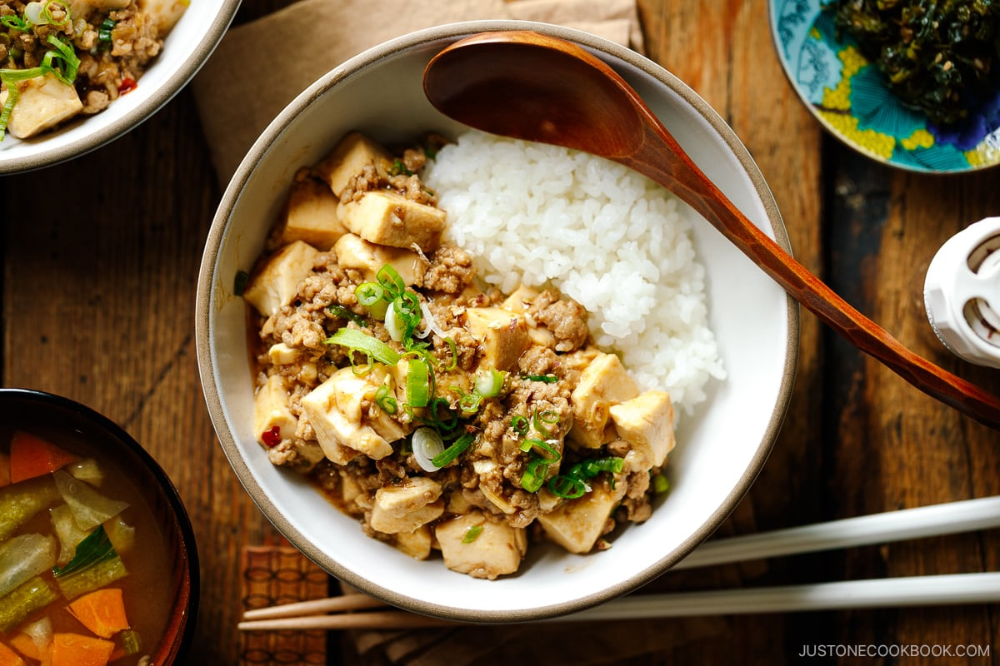

Mapo Dofu
Mapo tofu is originally a Chinese dish from the Sichuan Province. It consists of tofu in a
(usually) spicy, thin, red sauce along with minced meat. The meat is traditionally beef.
Many variations of this recipe exist, some with water chestnut, vegetables, onion, or even
wood-ear mushrooms! Nowadays, mapo tofu can be found in China as well as Japan and
Korea, where it has been adapted to fit the local taste. In the West, the flavor is quite
different, with the spiciness toned down to appeal to a wider audience.
In my house the mapo tofu is sweet, with many changes to the original recipe. This is the recipe
my oba-chan modified and gave to my mother, who added more variations.
For a little context, my oba-chan is my grandmother on my father’s side of the family and
she is originally from Japan. My mother is from Guadalajara, in Mexico.
This recipe has a mix of all our cultures.
Ingredients
- oil
- 2 Tablespoons..grated ginger
- 1 Tablespoom.. chopped garlic
- 1 pound.. ground pork
- 2 Tablespoons.. sugar
- 1 box.. firm or medium tofu cut into cute little cubes
- 2 Tablespoons.. soy sauce
- 1/4 cup.. sake
- 1 box(no condiments).. nato
- scallions
- 1.. avocado cut into cubes (to match the tofu)
- 2 cups.. rice
- 1 Tablespoon.. black bean paste
Instructions
- Take a cast iron pan (because those heavy pots heat up nicely!), and put in over the fire!
- When the metal is hot, pour a bit of oil+garlic+ginger.
- Mix the oil and roots to release the flavors and aroma.
- Watch them sizzle for no more than one minute.
- Quickly! Add the pork so nothing burns!
- Now the temperature just dropped (phew!), break down the meat with a spatula and brown the pork.
- Once the pork is brown open a space so you can see the metal of the pan.
- Add sugar there and watch the sugar melt a bit and become just a bit browner (this changes the flavor of the sugar).
- Mix pork and sugar
- Smell and smile
- Now add Black Bean Garlic Paste, soy sauce, sake.
- And mix, scraping the bottom of the pan so that the sake collects the flavor from the burnt bottom (yum!).
- Watch it bubble and wait until the liquid is almost (but not completely) evaporated.
- Add the nato, and mix it.
- Now the mixture should have a beautiful gloss. Turn the fire off.
- Wash and cut off the ends of the scallions.
- Cut scallions into thin ovals all the way to the green.
- Add tofu and scallions.
- Serve over white rice and top with avocado.
- Impress your family with this deliciousness!

Video
Sources:
MAPO TOFU WIKIPEDIA
MAPO TOFU PICTURE AND VIDEO SOURCE